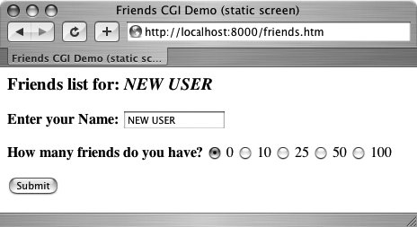
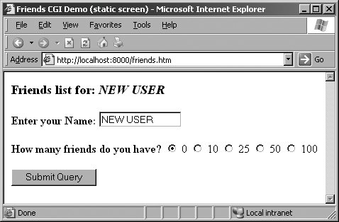
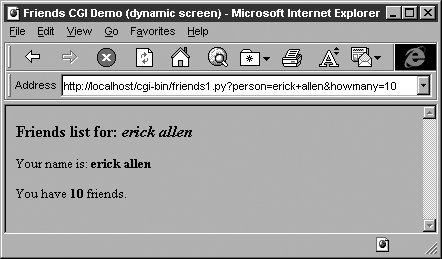
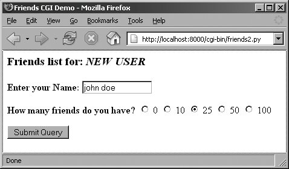
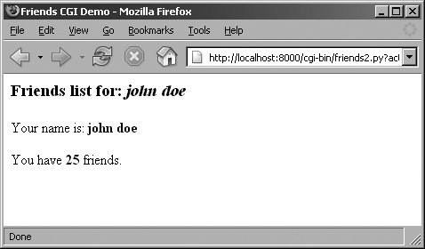
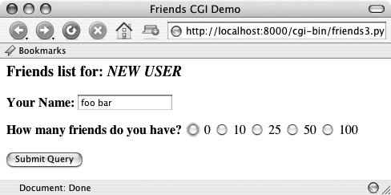
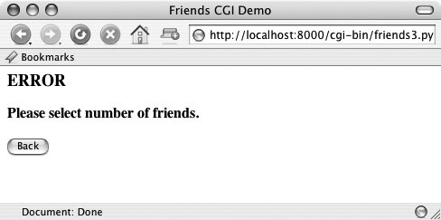
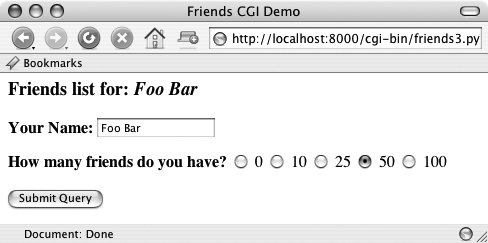
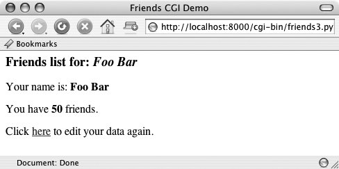

20.5. Building CGI Applications20.5.1. Setting Up a Web ServerIn order to play around with CGI development in Python, you need to first install a Web server, configure it for handling Python CGI requests, and then give the Web server access to your CGI scripts. Some of these tasks may require assistance from your system administrator. If you want a real Web server, you will likely download and install Apache. There are Apache plug-ins or modules for handling Python CGI, but they are not required for our examples. You may wish to install those if you are planning on "going live" to the world with your service. Even this may be overkill. For learning purposes or for simple Web sites, it may suffice to just use the Web servers that come with Python. In Section 20.8, you will actually learn how to build and configure simple Python-based Web servers. You may read ahead now if you wish to find out more about it at this stage. However, that is not what this section is about. If you want to just start up the most basic Web server, just execute it directly with Python: $ python -m CGIHTTPServer The -m option is new in 2.4, so if you are using an older version of Python or want to see alternative ways of running it, see section 14.4.3. Anyway, if you eventually get it working. ... This will start a Web server on port 8000 on your current machine from the current directory. Then you can just create a Cgi-bin right underneath the directory from which you started the server and put your Python CGI scripts in there. Put some HTML files in that directory and perhaps some .py CGI scripts in Cgi-bin, and you are ready to "surf" directly to this Web site with addresses looking something like these:
20.5.2. Creating the Form PageIn Example 20.3, we present the code for a simple Web form, friends.htm. Example 20.3. Static Form Web Page (friends.htm)
As you can see in the code, the form contains two input variables: person and howmany. The values of these two fields will be passed to our CGI script, friends1.py. You will notice in our example that we install our CGI script into the default cgi-bin directory (see the "Action" link) on the local host. (If this information does not correspond with your development environment, update the form action before attempting to test the Web page and CGI script.) Also, because a METHOD subtag is missing from the form action all requests will be of the default type, GET. We choose the GET method because we do not have very many form fields, and also, we want our query string to show up in the "Location" (aka "Address", "Go To") bar so that you can see what URL is sent to the server. Let us take a look at the screen that is rendered by friends.htm in a client (see Figure 20-4 for Safari on MacOS and Figure 20-5 for IE6). Throughout this chapter, we will feature screenshots from various Web browsers and operating systems over the past few years. Figure 20-4. Friends form page in Safari on MacOS X (friends.htm) Figure 20-5. Friends form page in IE6 on Win32 (friends.htm) 20.5.3. Generating the Results PageThe input is entered by the user and the "Submit" button is pressed. (Alternatively, the user can also press the RETURN or Enter key within the text field to cause a similar effect.) When this occurs, the script in Example 20.4, friends1.py, is executed via CGI. Example 20.4. Results Screen CGI code (friends1.py)
This script contains all the programming power to read the form input and process it, as well as return the resulting HTML page back to the user. All the "real" work in this script takes place in only four lines of Python code (Lines 1417). The form variable is our FieldStorage instance, containing the values of the person and howmany fields. We read these into the Python who and howmany variables, respectively. The reshtml variable contains the general body of HTML text to return, with a few fields filled in dynamically, the data just read in from the form. Core Tip: HTTP headers separate from HTML One possible resulting screen appears in Figure 20-6, assuming the user typed in "erick allen" as the name and clicked on the "10 friends" radio button. The screen snapshot this time is represented by the older IE3 browser in a Windows environment. Figure 20-6. Friends results page in IE3 on Win32 If you are a Web site producer, you may be thinking, "Gee, wouldn't it be nice if I could automatically capitalize this person's name, especially if they forgot?" This can easily be accomplished using Python CGI. (And we shall do so soon!) Notice how on a GET request that our form variables and their values are added to the form action URL in the "Address" bar. Also, did you observe that the title for the friends.htm page has the word "static" in it while the output screen from friends.py has the work "dynamic" in its title? We did that for a reason: to indicate that the friends.htm file is a static text file while the results page is dynamically generated. In other words, the HTML for the results page did not exist on disk as a text file; rather, it was generated by our CGI script, which returned it as if it was a local file. In our next example, we will bypass static files altogether by updating our CGI script to be somewhat more multifaceted. 20.5.4. Generating Form and Results PagesWe obsolete friends.html and merge it into friends2.py. The script will now generate both the form page as well as the results page. But how can we tell which page to generate? Well, if there is form data being sent to us, that means that we should be creating a results page. If we do not get any information at all, that tells us that we should generate a form page for the user to enter his or her data. Our new friends2.py script is shown in Example 20.5. Example 20.5. Generating Form and Results Pages (friends2.py)
So what did we change in our script? Let's take a look at some of the blocks of code in this script. Line-by-Line ExplanationLines 15In addition to the usual startup and module import lines, we separate the HTTP MIME header from the rest of the HTML body because we will use it for both types of pages (form page and results page) returned and we don't want to duplicate the text. We will add this header string to the corresponding HTML body when it comes time for output to occur. Lines 729All of this code is related to the now-integrated friends.htm form page in our CGI script. We have a variable for the form page text, formhtml, and we also have a string to build the list of radio buttons, fradio. We could have duplicated this radio button HTML text as it is in friends.htm, but we wanted to show how we could use Python to generate more dynamic outputsee the for-loop on Lines 2227. The showForm() function has the responsibility of generating a form for user input. It builds a set of text for the radio buttons, merges those lines of HTML into the main body of formhtml, prepends the header to the form, and then returns the entire wad of data back to the client by sending the entire string to standard output. There are a couple of interesting things to note about this code. The first is the "hidden" variable in the form called action, containing the value "edit" on line 12. This field is the only way we can tell which screen to display (i.e., the form page or the results page). We will see this field come into play in Lines 5356. Also, observe that we set the 0 radio button as the default by "checking" it within the loop that generates all the buttons. This will also allow us to update the layout of the radio buttons and/or their values on a single line of code (line 18) rather than over multiple lines of text. It will also offer some more flexibility in letting the logic determine which radio button is checkedsee the next update to our script, friends3.py coming up. Now you may be thinking, "Why do we need an action variable when I could just as well be checking for the presence of person or howmany?" That is a valid question because yes, you could have just used person or howmany in this situation. However, the action variable is a more conspicuous presence, insofar as its name as well as what it doesthe code is easier to understand. The person and howmany variables are used for their values while the action variable is used as a flag. The other reason for creating action is that we will be using it again to help us determine which page to generate. In particular, we will need to display a form with the presence of a person variable (rather than a results page)this will break your code if you are solely relying on there being a person variable. Lines 3139The code to display the results page is practically identical to that of friends1.py. Lines 4156Since there are different pages that can result from this one script, we created an overall process() function to get the form data and decide which action to take. The main portion of process() will also look familiar to the main body of code in friends1.py. There are two major differences, however. Since the script may or may not be getting the expected fields (invoking the script the first time to generate a form page, for example, will not pass any fields to the server), we need to "bracket" our retrieval of the form fields with if statements to check if they are even there. Also, we mentioned the action field above, which helps us decide which page to bring up. The code that performs this determination is in Lines 5356. In Figures 20-7 and 20-8, you will see first the form screen generated by our script (with a name entered and radio button chosen), followed by the results page, also generated by our script. Figure 20-7. Friends form page in Firefox I.x on Win32 (friends2.py) Figure 20-8. Friends results page in Firefox on Win32 (friends2.py) If you look at the location or "Go to" bar, you will not see a URL referring to a static friends.htm file as you did in Figure 20-4 or Figure 20-5. 20.5.5. Fully Interactive Web sitesOur final example will complete the circle. As in the past, a user enters his or her information from the form page. We then process the data and output a results page. Now we will add a link to the results page that will allow the user to go back to the form page, but rather than presenting a blank form, we will fill in the data that the user has already provided. We will also add some error processing to give you an example of how it can be accomplished. We now present our final update, friends3.py in Example 20.6. Example 20.6. Full User Interaction and Error Processing (friends3.py)
friends3.py is not too unlike friends2.py. We invite the reader to compare the differences; we present a brief summary of the major changes for you here. Abridged Line-by-Line ExplanationLine 8We take the URL out of the form because we now need it in two places, the results page being the new customer. Lines 1019, 6971, 7582All of these lines deal with the new feature of having an error screen. If the user does not select a radio button indicating the number of friends, the howmany field is not passed to the server. In such a case, the show-Error() function returns the error page to the user. The error page also features a JavaScript "Back" button. Because buttons are input types, we need a form, but no action is needed because we are simply just going back one page in the browsing history. Although our script currently supports (aka detects, tests for) only one type of error, we still use a generic error variable in case we wanted to continue development of this script to add more error detection in the future. Lines 27, 38-41, 49, and 52-55One goal for this script is to create a meaningful link back to the form page from the results page. This is implemented as a link to give the user the ability to return to a form page to update the data he or she entered, in case it was erroneous. The new form page makes sense only if it contains information pertaining to the data that have already been entered by the user. (It is frustrating for users to reenter their information from scratch!) To accomplish this, we need to embed the current values into the updated form. In line 27, we add a value for the name. This value will be inserted into the name field, if given. Obviously, it will be blank on the initial form page. In Lines 3841, we set the radio box corresponding to the number of friends currently chosen. Finally, on lines 49 and the updated doResults() function on lines 5255, we create the link with all the existing information, which "returns" the user to our modified form page. Line 62Finally, we added a simple feature that we thought would be a nice aesthetic touch. In the screens for friends1.py and friends2.py, the text entered by the user as his or her name is taken verbatim. You will notice in the screens above that if the user does not capitalize his or her names, that is reflected in the results page. We added a call to the string.capwords() function to automatically capitalize a user's name. The capwords() function will capitalize the first letter of each word in the string that is passed in. This may or may not be a desired feature, but we thought that we would share it with you so that you know that such functionality exists. We will now present four screens that show the progression of user interaction with this CGI form and script. In the first screen, shown in Figure 20-9, we invoke friends3.py to bring up the now-familiar form page. We enter a name "foo bar," but deliberately avoid checking any of the radio buttons. The resulting error after submitting the form can be seen in the second screen (Figure 20-10). Figure 20-9. Friends initial form page in Camino on MacOS X (friends3.py) Figure 20-10. Friends error page (invalid user input), also in Camino (friends3.py) We click on the "Back" button, check the "50" radio button, and resubmit our form. The results page, shown in Figure 20-11, is also familiar, but now has an extra link at the bottom. This link will take us back to the form page. The only difference between the new form page and our original is that all the data filled in by the user are now set as the "default" settings, meaning that the values are already available in the form. We can see this in Figure 20-12. Figure 20-11. Friends updated form page with current information Figure 20-12. Friends results page (valid input) (friends3.py) Now the user is able to make changes to either of the fields and resubmit his or her form. You will no doubt begin to notice that as our forms and data get more complicated, so does the generated HTML, especially for complex results pages. If you ever get to a point where generating the HTML text is interfering with your application, you may consider connecting with a Python module such as HTMLgen, an external Python module which specializes in HTML generation. |